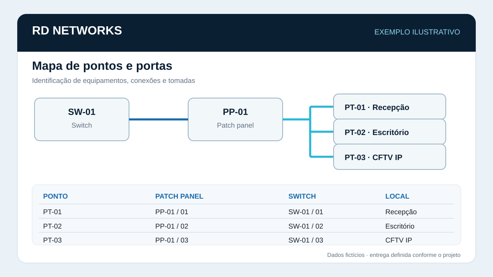
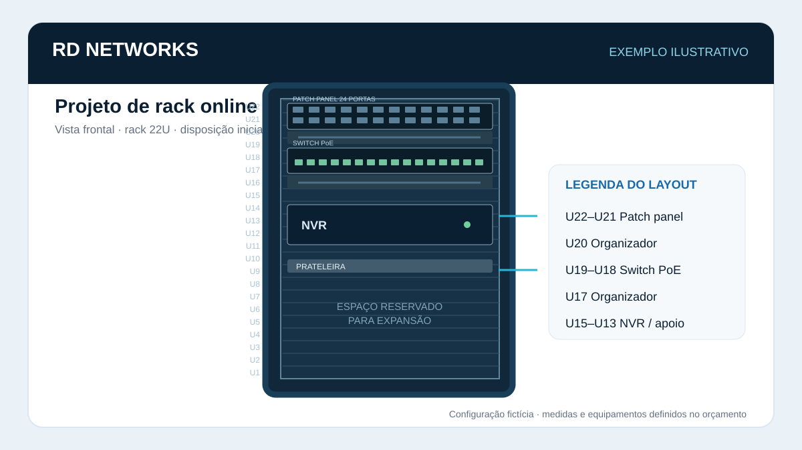

Cabeamento estruturado
Lançamento de cabos, pontos de rede e terminações para infraestrutura de dados.
Conhecer este serviço →VITÓRIA • ESPÍRITO SANTO · BRASIL E EXTERIOR
Instalação e organização da infraestrutura física de redes e pequenos serviços elétricos para empresas. Também preparamos documentação de redes e projetos de rack online a partir das informações do seu ambiente.
O QUE FAZEMOS
Lançamento de cabos, pontos de rede e terminações para infraestrutura de dados.
Conhecer este serviço →
Fixação, organização, adequação de racks e conectorização de patch panels.
Conhecer este serviço →
Crimpagem de conectores RJ45, keystones e acabamento dos pontos.

Infraestrutura física, lançamento de cabos de dados e fixação de câmeras.

Lançamento de fibra conforme análise técnica, percurso e condições do local.

Mapeamento de pontos, portas, equipamentos e conexões para facilitar a gestão da infraestrutura.
Conhecer este serviço →
Novas tomadas e pontos elétricos para equipamentos e racks. Atendimento independente ou junto da infraestrutura de redes, conforme avaliação do local.
Conhecer este serviço →SERVIÇOS ONLINE
Envie fotos, plantas e informações dos equipamentos. Analisamos o material, definimos o escopo com você e preparamos os entregáveis combinados na proposta.

Organização de informações sobre pontos, patch panels, portas, equipamentos, endereçamento e topologia, conforme os dados fornecidos e o escopo contratado.
Ver detalhes da documentação →
Planejamento da disposição dos equipamentos e conexões do rack com base nas medidas, fotos e necessidades informadas. A instalação física é orçada separadamente.
Solicitar proposta →MATERIAL COMERCIAL
Baixe a apresentação comercial completa da RD Networks, com as frentes de atuação, exemplos ilustrativos e formas de atendimento.
COMO FUNCIONA
RD NETWORKS
A RD Networks é uma pequena empresa de Vitória/ES, com uma equipe de duas pessoas. Atendemos serviços pontuais de infraestrutura física, pequenos serviços elétricos e projetos de documentação e planejamento online. Cada proposta define escopo, prazo, entregáveis e eventuais custos de deslocamento antes da execução.
CNPJ 69.318.238/0001-66 · Responsável: Rodrigo de Souza Conceição.
ÁREA DE ATENDIMENTO
Na Grande Vitória, atendemos serviços presenciais de infraestrutura. Outras localidades no Brasil são avaliadas conforme o projeto, com deslocamento previsto no orçamento.
Para clientes internacionais, oferecemos documentação de redes e planejamento de racks online. Trabalhos presenciais no exterior são avaliados caso a caso, considerando escopo, viagem, acesso ao local e requisitos aplicáveis.
CONTATO DIRETO
Escolha WhatsApp ou e-mail. Conte qual serviço precisa, a cidade e um resumo do ambiente; responderemos para entender o escopo.
SOLICITE UMA PROPOSTA
Descreva seu ambiente e o serviço desejado. Se tiver fotos, plantas ou lista de equipamentos, podemos combinar o envio desses materiais após o primeiro contato. Você também pode escrever para rdnetworks2026@gmail.com ou conversar pelo WhatsApp.